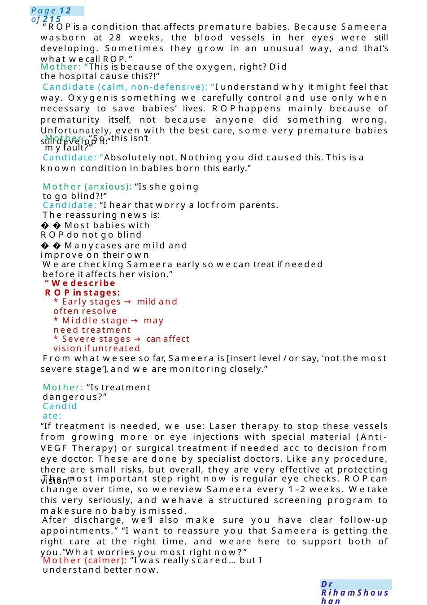

ROP
MRCPCHCommunication Scenario – ROP(Difficult Parent) ⚕️Candidate Instructions: You are a paediatric doctor in NICU.You are asked to speak to Miss Huda, mother of Sameera (28 weeks) diagnosed with ROP.
Scenario Summary
MRCPCHCommunication Scenario – ROP(Difficult Parent) ⚕️Candidate Instructions: You are a paediatric doctor in NICU.You are asked to speak to Miss Huda, mother of Sameera (28 weeks) diagnosed with ROP.
Full Original Scenario

ROP
MRCPCHCommunication Scenario – ROP(Difficult Parent)
⚕️Candidate Instructions: You are a paediatric doctor in NICU.You are asked to speak to Miss Huda, mother of Sameera (28 weeks) diagnosed with ROP.
Your tasks: * Explain ROP, stages, causes, treatment. Manageconflict and emotions
Candidate: I am Doctor... one of the babies' doctors here. Congratulations for birth of Sameera &I hope you reached full recovery and feeling good after labour.
Tell me, howfar you knowabout Sameera health?
Mother (angry tone): “Doctor, what is going on with mybaby?! “Doctor, they told memybaby has something wrongwith her eyes...I’mreally scared. Whatdoes that mean?Whydidn’t anyone tell me this before.
Keyquestions:
1. “Will she go blind?!”
2. “Who is responsible for this?”
3. “Whydidn’t you prevent it?”
4. “Is treatment risky?”
5. “Are you sure she’ll be okay?”
Candidate: “Miss Huda, I can see howupsetting and frustrating this is for you.
Anyonein your position wouldfeel the same. "I'm really glad youspoke up—let’s gothrough everything clearly together.” “I’ll explain:

“ROPis a condition that affects premature babies. Because Sameera wasborn at 28 weeks, the blood vessels in her eyes were still developing. Sometimes they grow in an unusual way, and that’s what wecall ROP.”
Mother: “This is because of the oxygen, right? Did the hospital cause this?!”
Candidate (calm, non-defensive): “I understand why it might feel that way. Oxygenis something we carefully control and use only when necessary to save babies’ lives. ROPhappens mainly because of prematurity itself, not because anyone did something wrong. Unfortunately, even with the best care, some very premature babies still develop it.”
Mother: “So, this isn’t myfault?”
Candidate: “Absolutely not. Nothing you did caused this. This is a known condition in babies born this early.”
Mother (anxious): “Is she going to go blind?!”
Candidate: “I hear that worry a lot from parents. The reassuring news is:
Most babies with ROPdo not go blind
Manycases are mild and improve on their own
We are checking Sameera early so wecan treat if needed before it affects her vision.”
“Wedescribe ROPin stages:
- Early stages →mild and often resolve
- Middle stage →may need treatment
- Severe stages →can affect vision if untreated
From what wesee so far, Sameera is [insert level / or say, ‘not the most severe stage’], and we are monitoring closely.”
Mother: “Is treatment dangerous?”
Candidate:
“If treatment is needed, we use: Laser therapy to stop these vessels from growing more or eye injections with special material (Anti-VEGF Therapy) or surgical treatment if needed acc to decision from eye doctor. These are done by specialist doctors. Like any procedure, there are small risks, but overall, they are very effective at protecting vision.”
The most important step right now is regular eye checks. ROPcan change over time, so wereview Sameera every 1–2 weeks. Wetake this very seriously, and wehave a structured screening program to makesure no baby is missed.
After discharge, we’ll also make sure you have clear follow-up appointments.” “I want to reassure you that Sameera is getting the right care at the right time, and we are here to support both of you.”What worries you most right now?”
Mother (calmer): “I was really scared... but I understand better now.

Palivizumab
was born early. What have you heard about the injection?
❤️Acknowledge &Validate
protected.
Explore ICE
getting an injection to protect your baby from RSV.Could youtell mea bit moreabout your concerns?
complications) is requesting Palivizumab to prevent Respiratory Syncytial Virus infection.
Scenario: Motherrequesting unnecessary Palivizumab
Context: Youare a pediatric trainee in clinic. Amother of a 3-month-old infant (born at 34 weeks, no
Doctor: Hello, I’m Dr. [Name], one of the paediatric doctors. I understand you wanted to discuss
Mother: Yes, I heard RSV can be dangerous, especially for premature babies. I want my baby
Doctor: That’s completely understandable—RSV can sound worrying, especially when your baby
Doctor: You’re clearly trying to do the best for your baby, and it’s good you’re thinking ahead about prevention.
Explanation (Clear +Structured)
Doctor: The injection you’re referring to, Palivizumab, is used to protect babies whoare at very high risk of severe RSVinfection. This usually includes:
- Babies born very prematurely (much earlier than 34 weeks)
- Babies whoneeded intensive care or breathing support
- Babies with certain heart or lung conditions
Fromwhat you’ve told me, your baby wasborn at 34weeks and has been doing well without needing special care. That meansyour baby is not in the high-risk group that wouldbenefit from this injection.